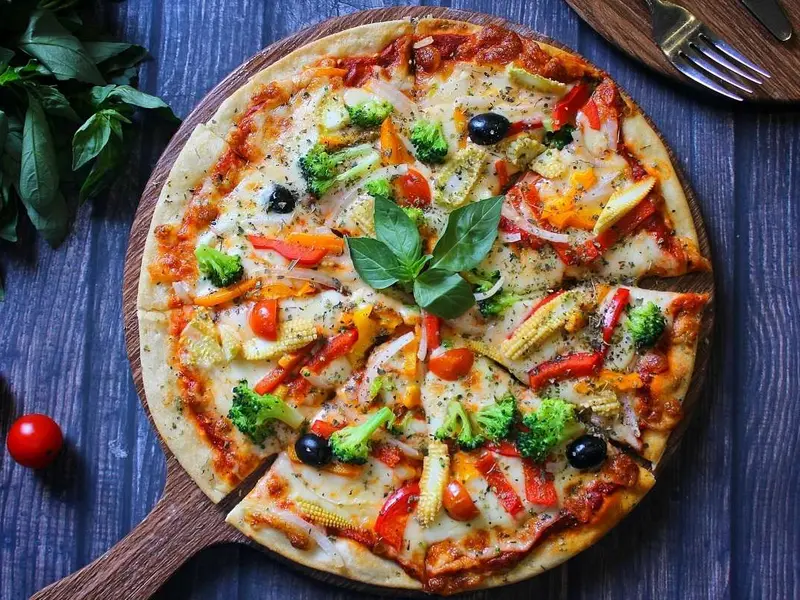
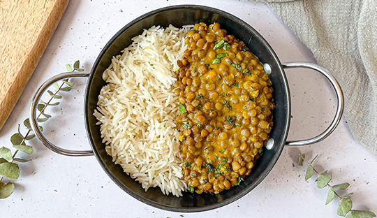

Opcion de pastas clasicas
Pastas clásicas Son las recetas tradicionales que forman parte de la cocina de todos los días. Incluyen pastas sin relleno como spaghetti, penne o fettuccine, acompañadas con salsas típicas como tomate, bolognesa, crema o pesto. Se destacan por su simpleza y por el protagonismo de la salsa, siendo ideales para comidas prácticas, sabrosas y reconfortantes.
Opcion de pastas rellenas
Las pastas rellenas representan una de las preparaciones más tradicionales y queridas de la cocina. Se elaboran con una masa fresca y suave que envuelve distintos rellenos, creando una combinación equilibrada entre textura y sabor en cada bocado. Pueden llevar carne, pollo, verduras, ricota o mezclas de quesos, adaptándose a todos los gustos.
Salteado de vegetales asados con quinoa y hierbas frescas
Esta receta es una opción vegetariana simple y nutritiva que combina quinoa con vegetales asados. Es un plato liviano pero completo, donde los vegetales aportan sabor y color, y la quinoa suma textura y valor nutritivo. Ideal para un almuerzo fresco o una cena ligera.
- 1 taza de quinoa
- 2 tazas de agua o caldo vegetal
- 1 zucchini
- 1 morrón rojo
- 1 zanahoria
- 1 cebolla morada
- 1 taza de brócoli (opcional)
- 2 cucharadas de aceite de oliva
- Sal y pimienta a gusto
- Jugo de ½ limón
- Un puñado de perejil y/o albahaca fresca picada
- Semillas (sésamo o girasol, opcional)
Primero, lavar bien la quinoa bajo agua fría para quitarle el sabor amargo natural. Luego colocarla en una olla con el doble de agua y cocinar a fuego medio hasta que absorba el líquido y los granos estén tiernos (unos 12 a 15 minutos). Retirar del fuego y dejar reposar tapada unos minutos antes de separar los granos con un tenedor.
Mientras se cocina la quinoa, cortar los vegetales en trozos medianos, colocarlos en una placa para horno y condimentarlos con aceite de oliva, sal y pimienta. Llevar a horno precalentado a 200 °C durante aproximadamente 20 a 25 minutos, hasta que estén tiernos y ligeramente dorados.
Finalmente, mezclar la quinoa cocida con los vegetales asados en una sartén grande, cocinar unos minutos para integrar bien los sabores y terminar con un toque de jugo de limón y hierbas frescas picadas antes de servir.

Pizza crocante
La pizza es una de nuestras comidas rápidas favoritas, pues además de rica, es muy reconfortante. Si no eres fan de los embutidos, prueba esta receta de pizza vegetariana, tan llena de sabor, que te olvidarás del pepperoni.
Originalmente, la pizza, nacida en Italia en el siglo XVIII, era vegetariana. Al inicio, ni siquiera llevaba queso, pues se trataba de un pan plano con aceite de oliva, tomate y hierbas. Posteriormente, se añadió queso y vegetales, como en la pizza Margarita.
Pero, ¿qué hay de los embutidos? Estos se popularizaron principalmente con la llegada de la pizza a Estados Unidos en el siglo XX y se han vuelto un favorito porque aportan mucho sabor y una textura diferente, además de que son fáciles de conservar.
- 2 tazas de harina de trigo
- ¾ taza de agua tibia
- 1 cucharadita de sal
- 1 cucharada de aceite de oliva
- 1 cucharadita de azúcar
- 1 cucharadita de levadura seca activa
- ½ taza de salsa de tomate para pizza
- 1 taza de queso mozzarella rallado
- ½ pimiento rojo, cortado en tiras
- ½ pimiento verde, cortado en tiras
- ½ cebolla morada, cortada en julianas
- 1 calabacita, cortada en rodajas finas
- 5 champiñones fileteados
- ¼ taza de aceitunas negras rebanadas
Para preparar esta pizza, primero se activa la levadura mezclándola con agua tibia y azúcar hasta que espume. Luego se combina la harina con sal, se agrega la levadura y el aceite de oliva, y se amasa hasta obtener una masa elástica. Se deja reposar una hora, hasta que duplique su tamaño.
Después, se estira la masa en una charola, se cubre con salsa de tomate y queso mozzarella, y se añaden los vegetales cortados (pimientos, cebolla, calabacita, champiñones y aceitunas). Finalmente, se hornea a 220 °C durante 15 a 20 minutos, hasta que esté dorada y el queso derretido. Se deja reposar unos minutos antes de servir.

Curry de Lentejas y Coco
Esta receta es un curry cremoso de lentejas con leche de coco y especias aromáticas. Combina la suavidad y el dulzor de la crema de coco con el sabor intenso del curry, la cúrcuma y el jengibre, logrando un plato cálido, especiado y reconfortante. Ideal para acompañar con arroz basmati o pan naan y disfrutar de una opción vegetariana llena de sabor.
- 1 ½ taza de lentejas cocidas
- 2 cucharadas de aceite
- ½ cebolla picada
- 2 dientes de ajo
- 1 tomate sin piel
- 400 gr de crema de coco
- ½ cucharada de sal
- 1 cucharada de curry en polvo
- ½ cucharada de cúrcuma
- 1 cucharadita de comino
- 1 cucharadita de jengibre molido
- 2 cucharaditas de ralladura de limón
En una olla, calentar el aceite y sofreír la cebolla, el tomate y el ajo hasta que estén tiernos. Retirar del fuego y colocar esta preparación en una licuadora junto con la crema de coco, procesando hasta obtener una salsa suave. Volver a llevar la mezcla a la olla, agregar la sal y las especias (curry, cúrcuma, comino y jengibre), e integrar bien. Incorporar las lentejas cocidas y cocinar durante tres a cuatro minutos para que los sabores se mezclen. Ajustar la sazón si es necesario y servir caliente, idealmente acompañado de arroz basmati o pan naan.

Hojaldre de Espinacas con Frutos Secos
Es una receta de ñoquis con una salsa cremosa de zapallo y crema de leche, suave y levemente dulce. El parmesano aporta un toque salado que equilibra los sabores. Es un plato simple, reconfortante y perfecto para una comida casera cálida y sabrosa.
- 2 sobres de callampas deshidratadas
- 1 cucharada de aceite de oliva
- 2 cucharaditas de ajo picado
- ½ cebolla en cubitos
- 1 pera en cubitos
- 300–400 g de espinaca fresca
- 1 masa de hojaldre rectangular
- 50 g de queso mozzarella
- 200 g de ricotta
- 30 g de queso azul
- 50 g de nueces picadas (o almendras/avellanas)
- 1 yema
- 1 cucharada de leche
Precalentar el horno a 200 °C y preparar una bandeja con papel para hornear. Hidratar las callampas con agua hirviendo durante 10 minutos, escurrir y picar. En una sartén, calentar el aceite de oliva y sofreír el ajo junto con la cebolla hasta que estén transparentes. Agregar las callampas y cocinar unos minutos, luego incorporar la pera y cocinar hasta que esté tierna. Añadir la espinaca y cocinar hasta que reduzca su volumen. Retirar del fuego y dejar enfriar.
Una vez tibia la preparación, mezclarla con la ricotta, la mozzarella y el queso azul, integrando bien. Agregar las nueces picadas y mezclar nuevamente. Colocar el relleno sobre la masa de hojaldre, enrollar o cerrar según la forma deseada y pincelar con la mezcla de yema y leche. Llevar al horno durante 25 a 30 minutos, hasta que esté dorado. Servir caliente.